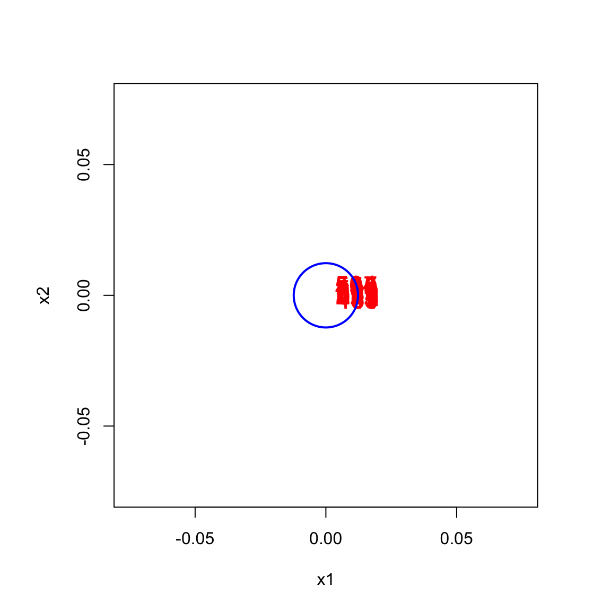
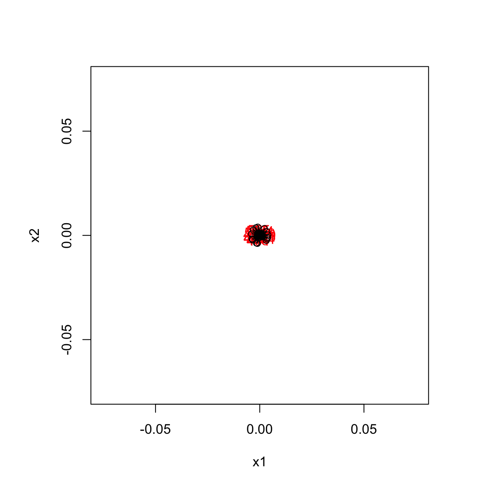
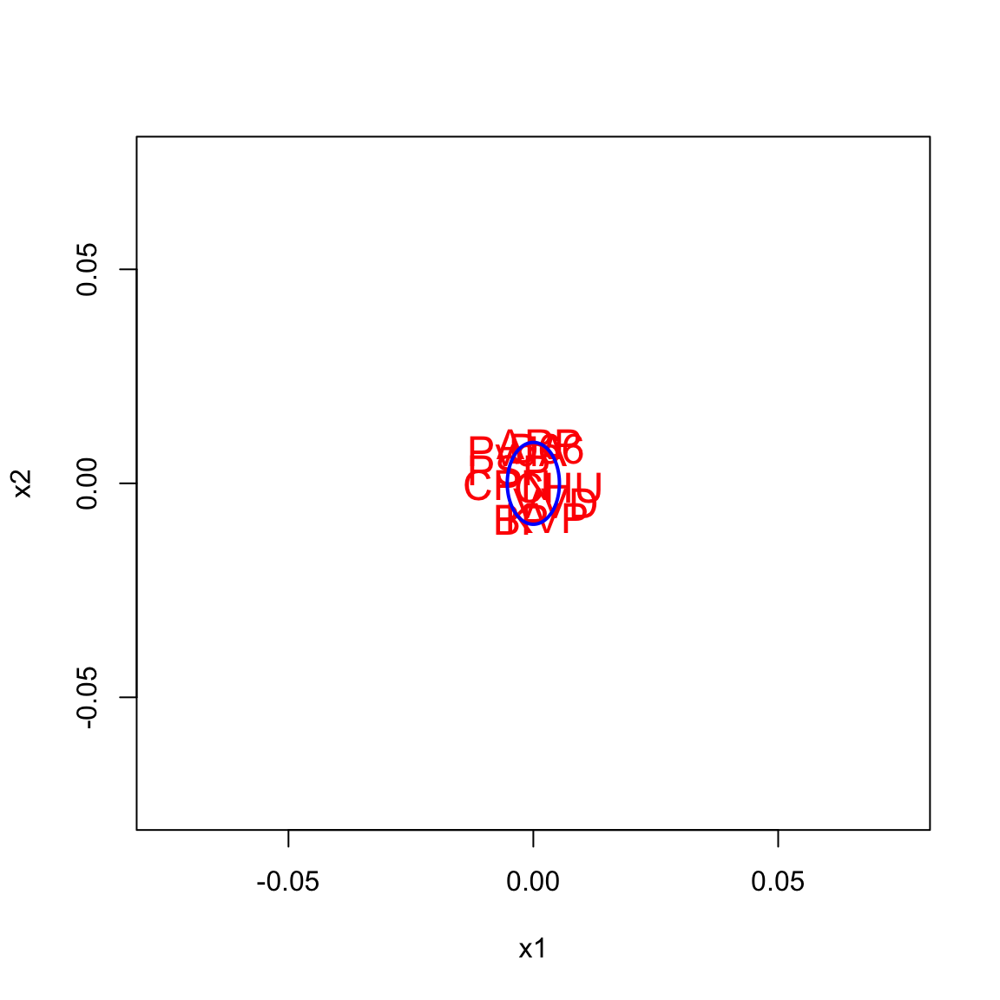
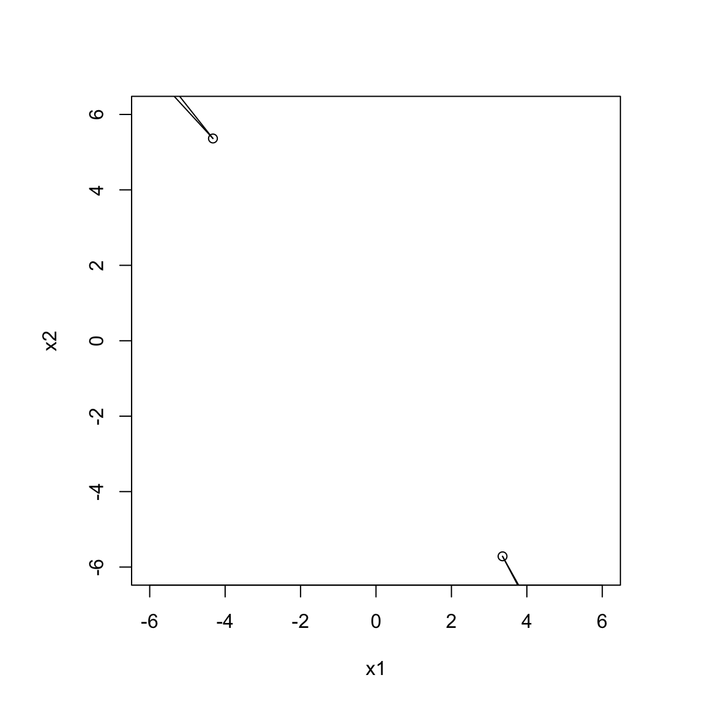
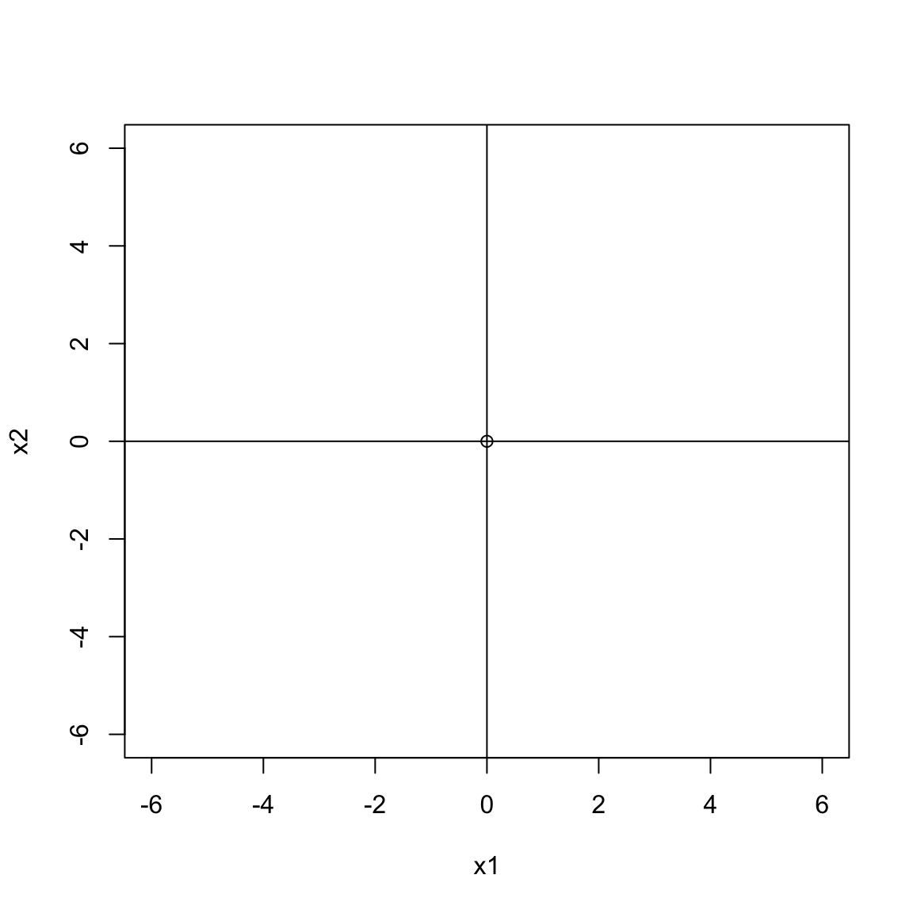

15 Constrained Multidimensional Scaling
As we have seen in section 1.3 CMDS is defined as the generalization of basic MDS in which we want to solve \[ \min_{X\in\Omega}\ \mathop{\sum\sum}_{1\leq i<j\leq n}w_{ij}(\delta_{ij}-d_{ij}(X)^2, \] where \(\Omega\) is a subset of \(\mathbb{R}^{n\times p}\).
\(X=F(\theta)\) vs \(F(X)\geq 0\) \(G(X)=0\)
Primal-Dual
Configuration-Distances \(F(D(X))\geq 0\) and \(G(D(X))=0\)
15.1 Basic Partitioning
In the smacof approach a comprehensive approach to constrained MDS was developed in De Leeuw and Heiser (1980). It is a primal method that does not involve penalty parameters, and it defines the constraints directly on the configuration.
The starting point is the majorization partitioning.
\[\begin{equation} \sigma(X)\leq 1+\eta^2(X-\mathfrak{G}(Y))-\eta^2(\mathfrak{G}(Y)), \tag{15.1} \end{equation}\]
with equality, of course, if \(X=Y\).
The smacof algorithm for constrained MDS has consequently two steps. In the first we compute the Guttman transform of the current configuration, and in the second we find the metric projection of this Guttman transform on the constraint set (in the metric defined by \(V\)). Thus, in shorthand,
\[\begin{equation} X^{(k+1)}\in\mathop{\text{Argmin}}_{Y\in\Omega}\ \eta^2 (Y-\Gamma(X^{(k)})). \tag{15.2} \end{equation}\]
To emphasize we look for a fixed point of the composition of two maps, the Guttman transform and the projection operator \(\Pi_\Omega\), we can write in even shorter hand
\[ X^{(k+1)}\in\Pi_\Omega(\Gamma(X^{(k)})) \]
The smacof formulation of the CMDS problem is elegant, if I say so myself, but it is not always simple from the computational point of view. The Guttman transform is easy enough to compute, but projecting on \(\Omega\) in the \(V\) metric may be complicated, depending on how \(\Omega\) is defined. In this chapter we will discuss a number of examples with varying degrees of difficulty in computing the smacof projection.
15.2 Unweigthing
For some types of constraints, for example the circular and elliptical MDS discussed in section 15.5, unweighted least squares is computationally simpler than weighted least squares. In those cases it generally pays to use majorization to go from a weighted to an unweighted problem (see also Groenen, Giaquinto, and Kiers (2003)). This will tend to increase the number of iterations of smacof, but the computation within each iteration will be considerably faster.
From equation (15.2), the projection problem in constrained MDS is to minimize the weighted least squares loss function \(\phi(X):=\text{tr}\ (Z-X)'V(Z-X)\) over \(X\in\Omega\). Now suppose \(\theta\) is the largest eigenvalue of \(V\), so that \(V\lesssim\theta I\), and suppose \(Y\in\Omega\). Then
\[\begin{multline} \phi(X)=\text{tr}\ ((Z-Y)-(X-Y))'V((Z-Y)-(X-Y))\leq\\\phi(Y)-2\ \text{tr}\ (Z-Y)'V(X-Y)+\theta\ \text{tr}\ (X-Y)'(X-Y). \tag{15.3} \end{multline}\]
Completing the square gives the majorization
\[\begin{equation} \phi(X)\leq\phi(Y)+\theta\ \text{tr}\ (X-\overline{Y})'(X-\overline{Y})-\theta\ \text{tr}\ \overline{Y}'\overline{Y}, \tag{15.4} \end{equation}\]
with \(\overline{Y}\) the matrix-convex combination
\[\begin{equation} \overline{Y}:=(I-\frac{1}{\theta}V)Y+\frac{1}{\theta}VZ. \tag{15.5} \end{equation}\]
The weighted projection problem from equation (15.2) is replaced by one or more inner iterations of an unweighted projection problem. Set \(X^{(k,1)}=X^{(k)}\) and
\[\begin{equation} X^{(k,l+1)}\in\mathop{\text{Argmin}}_{Y\in\Omega}\ \text{tr}\ (Y-\overline{X}^{k,l})'(Y-\overline{X}^{(k,l)}). \tag{15.6} \end{equation}\]
After stopping the inner iterations at \(X^{(k,l+s)}\) we set \(X^{(k+1)}=X^{(k,l+s)}\). All \(X^{(k,l)}\) remain feasible, loss decreases in each inner iteration, and as long at the metric projections are continuous the map from \(X^{(k)}\) to \(X^{(k+1)}\) is continuous as well.
15.3 Constraints on the Distances
15.3.1 Rectangles
15.4 Linear Constraints
15.4.1 Uniqueness
\(X=(Z\mid D)\)
\(X=(Z\mid \alpha I)\)
Distance smoothing
15.4.2 Combinations
\(X=\sum\alpha_r Z_r\)
15.4.3 Step Size
\(X=Z+\alpha G\)
15.4.4 Single Design Matrix
\(X=ZU\)
15.4.5 Multiple Design Matrices
\(x_s=G_su_s\)
\[ d_{ij}^2(X)=\sum_{s=1}^p x_s'A_{ij}x_s= \sum_{s=1}^p u_s'G_s'A_{ij}G_su_s \]
15.5 Circular MDS
De Leeuw (2007c), De Leeuw (2007a), De Leeuw (2005b)
There are situations in which it is desirable to have a configuration with points that are restricted to lie on some surface or manifold in \(\mathbb{R}^p\). Simple examples are the circle in \(\mathbb{R}^2\) or the sphere in \(\mathbb{R}^3\). Some applications are discussed in T. F. Cox and Cox (1991) (also see T. F. Cox and Cox (2001), section 4.6), in Borg and Lingoes (1980), in Papazoglou and Mylonas (2017), and in De Leeuw and Mair (2009), section 5. The most prominent examples are probably the color circle and the spherical surface of the earth, but there are many other cases in which MDS solutions show some sort of “horseshoe” (De Leeuw (2007a)).
15.5.1 Some History
Figure 15.1: John van de Geer
Permit me to insert some personal history here. Around 1965 I got to work at the Psychological Institute. At the time Experimental Psychology and Methodology were in the same department, with John van de Geer as its chair. John had a long-running project with Pim Levelt and Reinier Plomp at the Institute for Perception RVO/TNO on perceptual and cognitive aspects of musical intervals. In Van de Geer, Levelt, and Plomp (1962), for example, they used various cutting-edge techniques at the time, the semantic differential for data collection, the centroid method for factor analysis, and oblique simple structure rotation. A couple of years later the cutting edge had moved to triadic comparisons for data collection and nonmetric multidimensional scaling (Levelt, Van De Geer, and Plomp (1966)). The analysis in Levelt, Van De Geer, and Plomp (1966) revealed a parabolic horseshoe structure of the musical intervals.
This inspired John to find a technique to fit quadratic (and higher order, if necessary) structures to scatterplots. If \(X\) is a two-dimensional configuration of \(n\) points, then form the \(n\times 6\) matrix \(Z\) with columns \(1,x_1,x_2,x_i^2,x_2^2,x_1x_2\). Now find \(\alpha\) with \(\alpha'\alpha=1\) such that \(\alpha'Z'Z\alpha\) is as small as possible. This gives the normalized eigenvector corresponding with the smallest eigenvalue of \(Z'Z\), or, equivalently, the right singular vector corresponding with the smallest singular value of \(Z\). It is easy to see how this approach generalizes to more dimensions and higher order algebraic surfaces. I remember with how much awe this technique was received by the staff of the Psychological Institute. It probably motivated me in 1966 to develop similar techniques and get my portion of awe.
Levelt, Van De Geer, and Plomp (1966) used the curve fitting technique to draw the best fitting parabola in the two-dimensional scatterplot of musical intervals. In their discussion they suggested that a similar quadratic structure could be found if similarities between political parties were analyzed, because for people in the middle of the left-right scale extreme-left and extreme-right parties would tend to be similar. If the effect of extremity was strong enough, the two extreme might even bend towards each other, leading to an ellipse rather than a parabola. In 1966 John asked student-researcher Dato de Gruijter to figure out if this curving back actually happened, which lead to De Gruijter (1967). Dato collected triadic comparisons between nine Dutch political parties, cumulated over 100 psychology students. The curve fitting technique indeed found best fitting ellipses.
15.5.2 Primal Methods
We follow De Leeuw and Mair (2009) in distinguishing primal and dual methods. In a primal method the surface we fit is specified in parametric form. The points on the circle, for example, have \((x_{i1},x_{i2})=(sin(\xi_i),cos(\xi_i))\). Rotational invariance of MDS means we can assume the center of the circle is in the origin. This is the approach of T. F. Cox and Cox (1991). They substitute the parametrix expression for the circle in the formula for stress and minimize over the sperical coordinates \(\xi_i\) using gradient methods. They develop a similar method for the sphere in \(\mathbb{R}^3\). For those who want to go to higher dimensions we illustrate a parametric representation for \(\mathbb{R}^4\). \[ (x_{i1},x_{i2},x_{i3},x_{i4})=\\(\sin(\xi_i)\cos(\theta_i)\sin(\mu_i),\ \sin(\xi_i)\cos(\theta_i)\cos(\mu_i),\ \sin(\xi_i)\sin(\theta_i),\ \cos(\xi_i)). \] Spherical coordinates soon get tedious, and De Leeuw and Mair (2009) simply require the distances of all points to the origin to be the same constant. Note that this puts the center of the fitted sphere in the origin, which means that in general the center of the point cloud cannot be taken to be in the origin as well. In smacof we use the
\[ \phi(X,\lambda):=\text{tr}\ (Z-\lambda X)'V(Z-\lambda X) \] over the radius \(\lambda\) and the configuration \(X\), which is constrained to have \(\text{diag}\ XX'=I\). De Leeuw and Mair (2009) project out \(\lambda\) and minimize \(\phi(X,\star):=\min_\lambda\phi(X,\lambda)\) over \(X\), using Dinkelbach majorization (Dinkelbach (1967)), a block relaxation that cycles over rows of \(X\). Solving for each \(p\) vector of coordinates requires solving a secular equation.
Here we proceed slightly differently. Our first step is to get rid of \(V\) using the formulas in 15.2.

After 2 iterations the primal method converges to a stress value of 0.4654367. The circle has radius 0.0122974.
15.5.3 Dual Methods
In a dual method we use unrestricted smacof, but we add a penalty to the loss if the configurations do not satisfy the constraints. We use a quadratic penalty, mainly because that fits seamlessly into the smacof approach.
We add one point, the center of the circle, with coordinates \(x_0\) to the configuration, and we require that all \(n\) other points have an equal distance from the center. The \(n\) dissimilarities \(\delta_{0,i}\) are unknown, so we use alternating least squares and estimate the missing dissimilarities by minimizing stress over them, requiring them to be all equal. All weights \(w_{0,i}\) are chosen equal to the penalty parameter \(\omega\). The solution for the common \(\delta_{0,i}\) is obviously the average of the \(n\) distances \(d_{0,i}\). In this case it is not necessary to use majorization to transform to unweighted least squares.

15.6 Elliptical MDS
15.6.1 Primal
The smacof projection problem for a \(p\)-axial ellipsoid minimizes \[ \phi(Y,\Lambda):=\text{tr}\ (Z-Y\Lambda)'V(Z-Y\Lambda) \] with \(\text{diag}\ YY'=I\) and with \(\Lambda\) diagonal and PSD.
ALS
Minimizing \(\phi\) over \(\Lambda\) for fixed \(Y\) is easy. For dimension \(s\) we have
\[ \lambda_s=\frac{y_s'Vz_s}{y_s'Vy_s}. \]
To minimize \(\phi\) over \(Y\) for fixed \(\Lambda\) we use \(Z-Y\Lambda=(Z\Lambda^{-1}-Y)\Lambda\) so that
\[ \phi(Y,\Lambda)=\text{tr}\ \Lambda^2(\tilde Z-Y)'V(\tilde Z-Y) \] with \(\tilde Z=Z\Lambda^{-1}\). We now use a slight modification of the majorization technique in section 15.2. Set \(Y=Y_{\text{old}}+(Y-Y_{\text{old}})\). Then \[ \phi(Y,\Lambda)=\text{tr}\ \Lambda^2((\tilde Z-Y_{\text{old}})-(Y-Y_{\text{old}}))'V((\tilde Z-Y_{\text{old}})-(Y-Y_{\text{old}}))=\\ \phi(Y_{\text{old}},\Lambda)-2\ \text{tr}\ \Lambda^2(\tilde Z-Y_{\text{old}})'V(Y-Y_{\text{old}})+\text{tr}\ \Lambda^2(Y-Y_{\text{old}})'V(Y-Y_{\text{old}}) \]
\[ \text{tr}\ \Lambda^2(Y-Y_{\text{old}})'V(Y-Y_{\text{old}})\leq \theta\lambda_{\text{max}}^2\ \text{tr}\ (Y-Y_{\text{old}})'(Y-Y_{\text{old}}) \]
where, as before, \(\theta\) is the largest eigenvalue of \(V\).
\[ \theta\lambda_{\text{max}}^2\ (Y-Y_{\text{old}})=V(\tilde Z - Y_{\text{old}})\Lambda^2 \] (abadir_magnus_05, p 283)
Normalize the rows of
\[ Y_{\text{old}}+\frac{1}{\theta\lambda_{\text{max}}^2}V(Z\Lambda^{-1}-Y_{\text{old}})\Lambda^2 \]

0.0053277, 0.0095667
2
0.415335
15.6.2 Dual
We will only develop a dual method for ellipses in two dimensions, because there is no easy characterization in terms of distances in higher dimensions (that I know of). But in two dimensions the famous pin-and-string construction uses the fact that for all points on the ellipse the sum of the distances to two focal points is constant. Thus our dual method now adds two points to the \(n\) points in the configuration, chooses the weights for the \(2n\) components of stress to be the penalty parameter w, and finds the \(2n\) unknown dissimilarities between the two focal points and the \(n\) points on the ellipse to add up to a constant.
This means we have to minimize \(\text{tr}\ (\Delta-D)'(\Delta-D)\) over \(\Delta\) satisfying \(\Delta e=\gamma e\), where for the time being \(\Delta\) and \(D\) are \(n\times 2\) submatrices. The Lagrangian is \(\text{tr}\ (\Delta-D)'(\Delta-D)-2\mu'(\Delta e-\gamma e)\), and thus we must have \(\Delta=D+\mu e'\). Taking row sums gives \(\gamma e = De+p\mu\) and thus \(\mu = \frac12(\gamma e-De)\). This implies \(\Delta-D=\mu e'=\frac{1}{2}(\gamma E_{np}-DE_{pp}),\) and to minimize loss over \(\gamma\) we choose \(\gamma=\frac{1}{n}e_n'De_p\). This gives \[ \Delta=DJ+\frac{e'De}{2n}ee'. \] Thus we take \(D\), transform its \(n\) rows to deviations from the mean, and then add the overall mean to all elements.


hyperbola: difference of distances constant \(|d((x_i,x_2),(f_1,0))-d((x_i,x_2),(g_1,0))|=c\) parabola: equal distance from the focus point and the directrix (horizontal axis) \(d((x_i,x_2),(f_1,f_2))=d((x_1,x_2),d(x_1,0))\)
15.8 Localized MDS
15.9 MDS as MVA
Q methodology